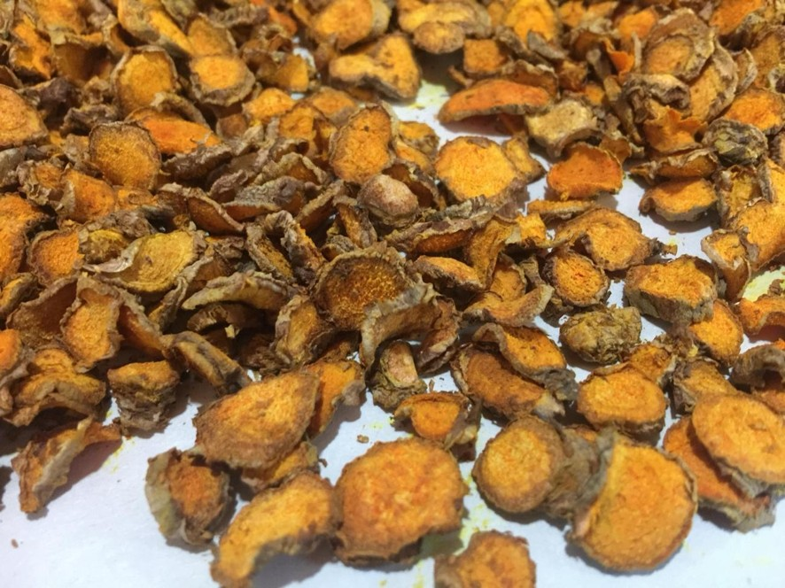
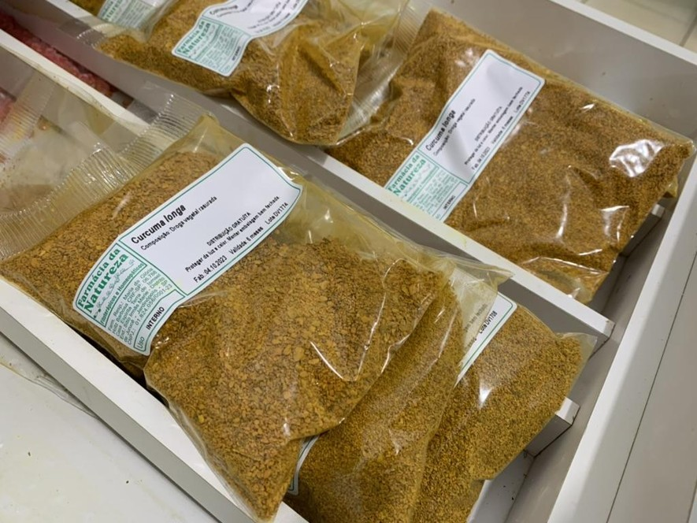

Nessa forma, as drogas vegetais são utilizadas no preparo de chás, cápsulas e sachês.
Exemplos de droga vegetal fatiada e triturada de Curcuma longa


Fonte: Acervo pessoal. Autor: Fabio Carmona. Local: Farmácia da Natureza, Jardinópolis, SP, Brasil.